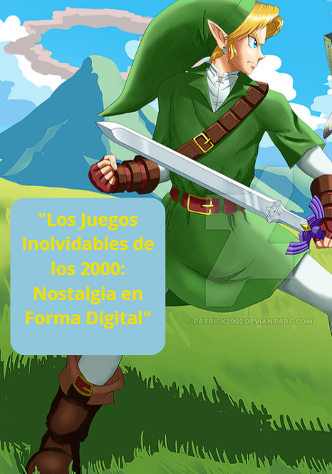
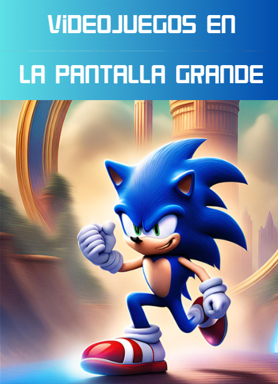
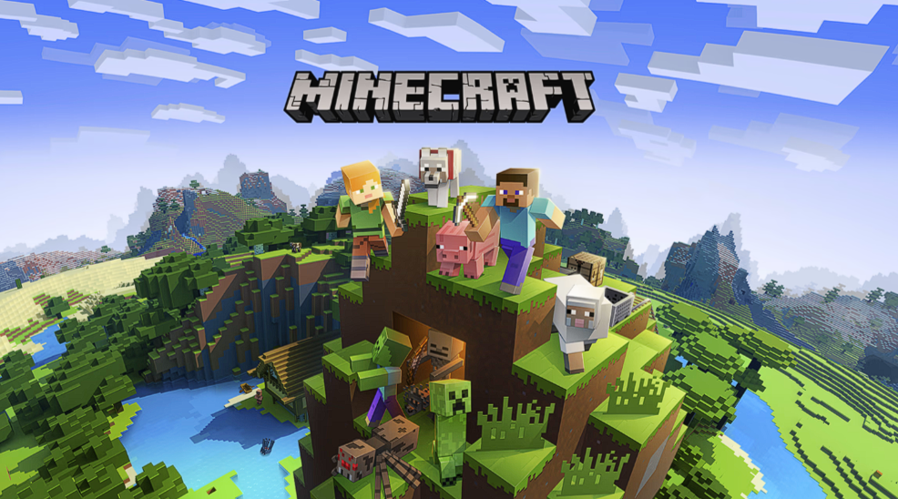

Los juegos inolvidables del 2000

Videojuegos en la pantalla grande

Check point es un nuevo espacio de difusión, de información en el mundo gamer. ¡A continuación te daremos más de un motivo para unirte a check point!
En esta sección encontrarás lo mas nuevo del día ¡todos los días!
¿Estás listo para sumergirte en una nueva aventura junto a Mario y sus amigos en un nuevo reino?
Aquí te contamos todo los que necesitas para escoger tu favorita, pequeño spoiler ¡Ambas son igual de increíbles!

Más motivos para seguir disfrutando de este increíble mundo.